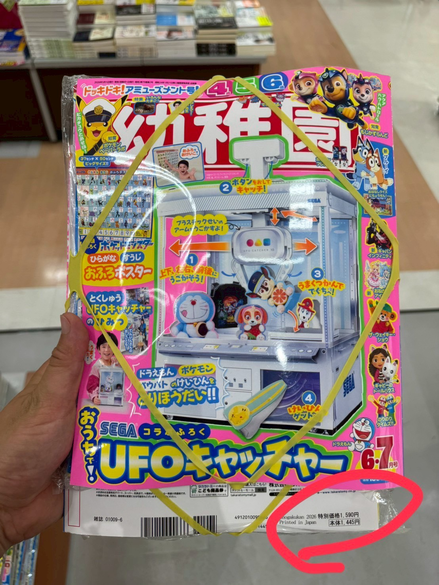

日本親子選物誌

小學館幼兒雜誌・2026年6・7月號
幼稚園
2026年 6・7月号
附錄：SEGA コラボ おうちでUFOキャッチャー
這期最大亮點是與 SEGA 合作的「居家 UFO 夾娃娃機」紙上付錄。孩子可以操作機台、移動吊臂、夾取小物，將日本遊戲中心常見的 UFO キャッチャー體驗帶回家。
UFO夾娃娃機SEGA合作手作組裝角色扮演親子共玩
本期看點
《幼稚園》是日本小學館面向幼兒家庭的月刊，特色是把生活主題、人氣角色與大型紙上付錄結合。這期的 UFO 夾娃娃機付錄，不只是看起來可愛，而是有明確的操作流程，孩子會需要觀察、調整位置、按下按鈕，再嘗試把獎品夾出來。
像真的遊戲機外觀模擬日本遊戲中心的 UFO キャッチャー，視覺吸引力強。
可操作玩法透過左右、前後移動與按鈕操作，讓孩子理解「瞄準」與「夾取」。
親子互動性高大人協助組裝，孩子負責挑戰，適合一起完成一個小型遊戲場景。
付錄介紹：おうちでUFOキャッチャー
這個付錄的核心賣點，是把「看得到、按得到、玩得到」的遊戲體驗做成紙上組裝玩具。
✅ 吊臂移動孩子可以模擬控制吊臂位置，練習觀察目標與方向感。
✅ 按鈕操作按下按鈕後嘗試抓取，增加遊戲的儀式感與期待感。
✅ 夾取小物可放入附錄小物或家中輕量小玩具，反覆挑戰。
✅ 遊戲中心角色扮演孩子可以扮演玩家、店員、排隊等待者，延伸生活情境遊戲。
選物觀點：這類大型紙上付錄很適合作為「親子一起組裝、孩子反覆遊玩」的商品。比單純角色雜誌更有保存與互動價值，也更容易做成短影音展示玩法。
影片示範
可搭配影片觀看實際組裝與玩法，讓家長更容易理解這期附錄的吸引力。
日本親子選物誌觀點
這本適合放在「日本幼兒雜誌附錄」類型中介紹，重點不是雜誌內頁內容，而是附錄本身具備可展示、可操作、可拍影片的商品力。對台灣家長來說，UFO 夾娃娃機是熟悉的娛樂場景，孩子也容易理解玩法，因此轉換成中文商品頁時，可以把賣點放在「在家也能玩日本遊戲中心體驗」。
若作為電商商品，建議主圖明確呈現封面與完成後的 UFO 機台，第二張開始用步驟圖或短影音示範「移動、按鈕、夾取」三個動作。這樣比只寫書名更容易提升點擊率與轉換率。
商品資訊
| 日文書名 | 幼稚園 2026年 6・7月号 |
|---|---|
| 中文頁名 | 幼稚園 (6・7月/2026/附SEGA合作居家UFO夾娃娃機) |
| 出版社 | 小學館 |
| 主要附錄 | SEGA コラボ おうちでUFOキャッチャー |
| 封面價格 | 特別価格 1,590円；本体 1,445円 |
| 適合族群 | 喜歡手作組裝、角色扮演、機台遊戲與日本幼兒雜誌附錄的親子家庭。 |